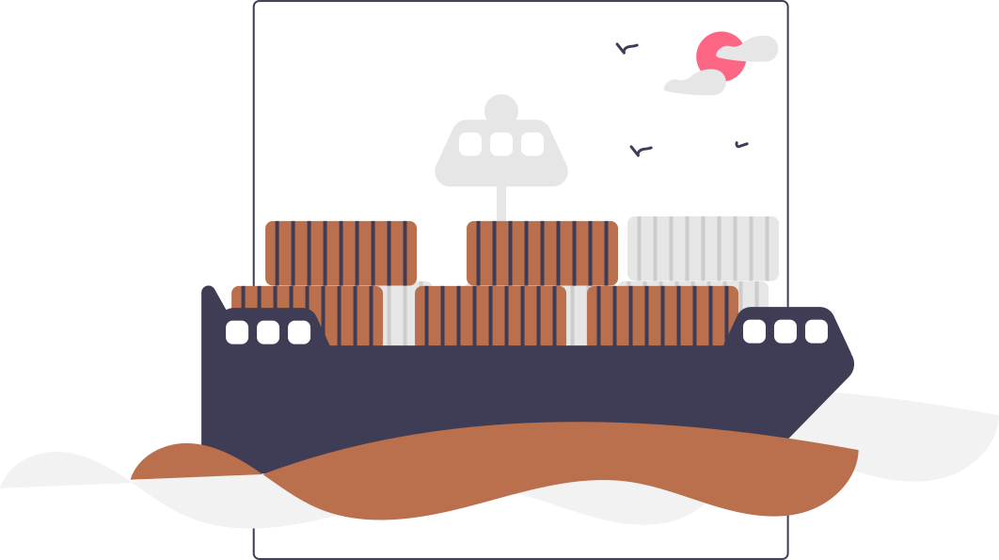
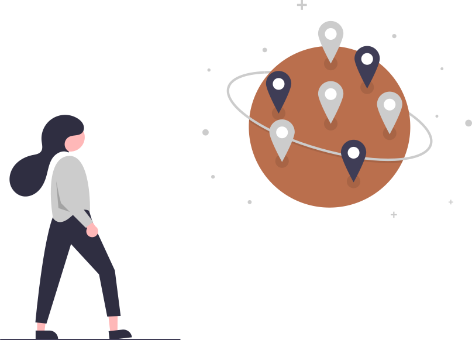
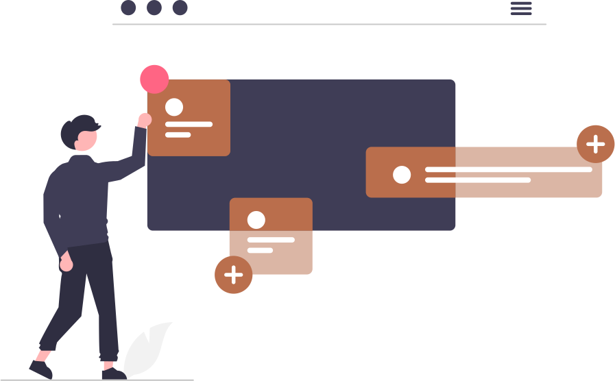
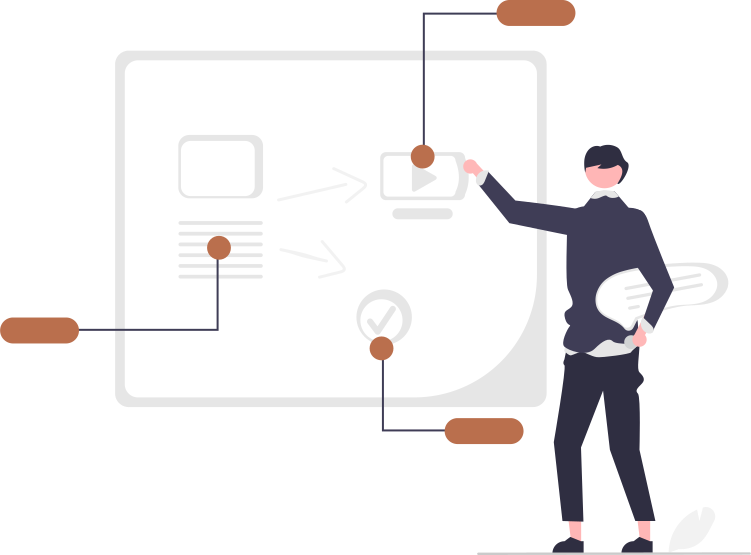

Samantha Morgan
About: After earning my English degree at CSULB, I took the first job that presented itself which was a drayage company. After working there for a while, I noticed myself gravitating towards the developers and wanting to know more about what they do and how they do it. I decided to take an entry level job at AAG where I currently work so I can pursue classes and certificates in basic coding.
AAG - Operations Support Coordinator
- Supports operations by being the first point of contact for processing applications.
- Checks documents for validity in support of operations.
- Verifies documents that need to be purged are purged effectively and accurately.
- Communicates to other departments for Operations Support needs.

Dray Alliance - Supervisor
- Created training presentations and exercises that represented different needs throughout the company.
- Supervised 200+ shipments per day, first point of escalation after customer service.
- Supervisor of 10 Customer Service Associates
- Weekly communications with the development team to communicate operations needs (ie, when something is broken, when
tools are needed).
- Introduced celebrating life events, holidays, and department outings.
Dray Alliance - Accounting
- Created the position of Accounts Payable and would received 100+ invoices for various equipment.
- Created a process to double check charges and dispute them if needed saving the company over 150k.
- A bill would get sent (ie, repair bills, per diem) and dates, time, usage, were double checked to either pay it or
clarify the reason for payment.


Dray Alliance - Export Specialist
- Created, coordinated, and oversaw 30+ export shipments daily.
- Constant communication with truckers, warehouses, customers, and others.
- Double checked information and communicated back to customer updates.
Dray Alliance - Data Entry
- Entered 50+ orders daily from clients into the internal CRM.
- Double checked information and communicated back to customer in case of any issues.
- 50+ daily trucking schedules were put into the system to keep the truckers, client, and the operations team aware.
- 50+ daily terminal appointments were created on terminal websites and double checked for accuracy in our CRM.


Goldenwest College - PASS Leader
- Supplemental education of students in precollege level English classes. Experience with ESL students and students with
special needs. Created own lesson plans, paperwork, and research for extra classes outside of main English curriculum.
Camp James - Camp Counselor
- First point of contact and escalation for five counselors
- Created training programs for volunteers and peers
- Implemented aftercare extra curricular activities